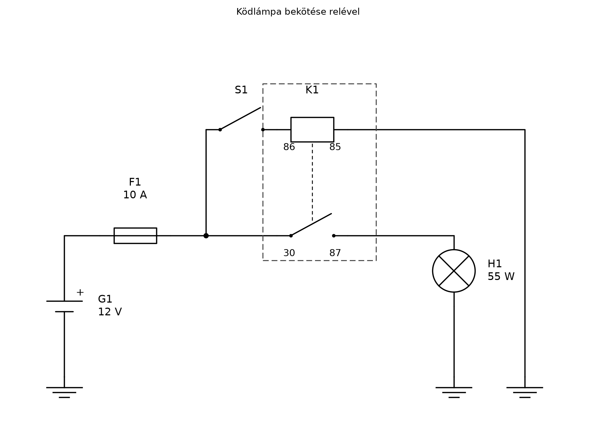

A fedélzeti hálózat felépítése után most azokat az elemeket vizsgáljuk meg, amelyeken ténylegesen „elindul” az áram a fogyasztó felé. A műhelyben a leggyakoribb villamos hibák nem mindig az érzékelők vagy a vezérlőegységek miatt keletkeznek, hanem a vezetékek sérülése, a csatlakozók korróziója, a biztosítók téves cseréje és a relék elhasználódása miatt. Ha egy tompított fény nem világít, először nem ECU-t cserélünk, hanem biztosítékot, áramkört, relét ellenőrzünk. Ez az alfejezet ahhoz ad gyakorlati alapot, hogy a vezeték-keresztmetszetet, a biztosító értékét és a relék kapcsolását tudatosan válaszd meg.
Képzelj el egy ködlámpát a jármű elején. A műszerfali kapcsoló nem közvetlenül kapcsolja a lámpát, mert a kapcsoló vékony vezetéke nem bírná a lámpa áramát. Helyette egy relé van a motortérben: a kapcsoló a relé tekercsét vezérli, a relé érintkezője pedig a biztosítón keresztül zárja a nagyobb áramú lámpakört. A kapcsolási rajz így néz ki:

Az ábrán jól látható a két áramkör: a vezérlőkör a 15-ös kapocs felől jön (itt egyszerűsítve a biztosíték utáni pluszról), az S1 kapcsolón és a K1 tekercsen át a testig; a munkakör a 30-as kapocstól a biztosítékon, a K1 munkaérintkezőjén és a H1 izzón át a testig.
Definíció. Gépjármű-vezeték. A járművillamossági vezeték olyan, rugalmasan hajlítható, többerű réz huzalból készült elektromos vezető, amelyet hő-, kopás- és üzemanyag-álló műanyag szigetelés borít. A járműiparban a merev, egyetlen huzalból álló vezeték ritka; a sok vékony elemi szálból sodrott felépítés a rezgésekkel szembeni hajlításállóság miatt szükséges.
Definíció. Kábelkorbács (wiring harness). A kábelkorbács a jármű egy meghatározott részének előre legyártott vezetékkötege, amely a vezetékeket, a csatlakozóházakat, az érintkezőket, a védőburkolatokat, a rögzítőelemeket és gyakran a biztosíték- vagy relétartókat is tartalmazza.
Definíció. Biztosító (fuse). A biztosító olyan védelmi elem, amely a rajta átfolyó áram által termelt hő hatására, a névleges áramot meghaladó túláram esetén megolvad, és így megszakítja az áramkört. A biztosító elsődleges feladata a vezeték védelme, nem pedig a fogyasztóé.
Definíció. Relé (relay). A relé olyan elektromechanikus vagy elektronikus kapcsoló, amely kis vezérlőárammal nagyobb munkaköri áramot kapcsol. A gépjárműiparban leggyakrabban elektromágneses relét használunk: a tekercs behúzza a mozgó érintkezőt, amely zárja vagy váltja a munkaköri kapcsokat.
A járművek vezetékei szinte mindig elektrolitikus vörösrézből készülnek. A réz fajlagos ellenállása -on . A vezeték ellenállása egy hosszúságú, keresztmetszetű rézvezető esetén:
A fogyasztó felé folyó áram hatására a vezetéken
feszültség esik. A járművek 12 V-os hálózatában már néhány tized volt esés is érezhető: a lámpa fényereje csökken, az indítómotor fordulatszáma visszaesik. A gyakorlatban a világítási körökben a megengedett feszültségesést gyakran – közé veszik fel, az indítókörben ennél nagyobb is lehet rövid időre, de ott is szigorú határt ad a gyártó. A pontos érték mindig a jármű dokumentációjából származik.
A vezeték melegedése is korlátozza a terhelhetőséget. A szigetelés anyagtól és hőmérsékleti osztálytól függ, ezért a „minél vastagabb, annál jobb” elv nem feltétlenül igaz, de a túl vékony vezeték tartós túlterhelésnél megolvadhat. A következő táblázat csak tanulási kiindulópont:
| Névleges keresztmetszet (mm²) | Tipikus tartós áram (A) | Tipikus biztosító (A) | Jellemző felhasználás |
|---|---|---|---|
| 0,5 | 5 | 5 | kis jelek, belső világítás |
| 1,0 | 10 | 10 | helyzetjelző, kis fogyasztó |
| 1,5 | 15 | 15 | tompított fény, ablaktörlő |
| 2,5 | 20 | 20 | nagyobb fogyasztó, hűtőventilátor |
| 4,0 | 30 | 30 | nagyáramú körök, generátor-környezet |
Az értékek tanulási példák (ellenőrizendő: gyártói adat / szabvány).
Számítás. Egy névleges teljesítményű ködlámpa fedélzeti feszültségről üzemel. A vezeték hossza a biztosítéktól a lámpáig . Legfeljebb feszültségesést engedünk meg. Mekkora legyen a rézvezeték keresztmetszete?
Adott: , , , , .
Keresett: .
Képlet:
Behelyettesítés:
Eredmény: legalább keresztmetszetű rézvezetéket kell választani, tehát a szabványos méret .
Ellenőrzés: Ha -t választunk, a tényleges esés
ami a megengedett határon belül van. ∎
Számítás. A fenti fogyasztóhoz illeszkedő biztosítót úgy választunk, hogy az áramkör tartós áramát bírja, de rövidzárlatnál gyorsan oldjon, és a vezeték áramterhelhetőségét ne lépje túl. A tartós áram , a választott vezeték tipikus terhelhetősége . A megfelelő biztosító például vagy lehet, amennyiben a fogyasztó bekapcsolási áramlökése ezt megengedi; itt -t választunk. Ellenőrzés: , tehát a biztosító a vezetéket védi. ∎
Megjegyzés. Túlméretezett biztosítóval a vezeték maga válik olvadóbiztosítékká, ami már nem megengedett védelmi megoldás.
A vezeték-színjelölés a járműgyártók kapcsolási rajzain
gyártóspecifikus. A magyar műhelyi gyakorlatban gyakran használt
rövidítés a német színrövidítéseken alapul: például a rt
piros, ws fehér, sw fekete, bl
kék, ge sárga lehet. A további csík jelölése például
rt/ws (piros alapszín, fehér csík), de ennek pontos
értelmezését mindig az adott gyártó kapcsolási rajza adja meg. Az
autószerelő ne a szín alapján kössön be egy vezetéket, hanem a
kapocsjelölést és az áramútrajzot kövesse; a szín csak segédlet.
Az analóg jeleknél, például a kopogásérzékelőnél vagy a lambdaszonda jelénél, a vezeték lehet árnyékolt: a belső jelvezetőt vezető fémháló vagy fémfólia veszi körül, amelyet testre kötnek. Az árnyékolás a külső elektromágneses zavarokat vezeti el. A CAN-buszok ezzel szemben gyakran csavart érpárt használnak: a két jelvezetőt egyenletes sodrással vezetik, így a külső zavar mindkét szálban közel azonos feszültséget indukál, amit a differenciális vevő kiszűr. Az adatbuszok részleteire a Adatbusz-hálózatok alfejezetben térünk vissza.
A kábelkorbács a járművön rögzített útvonalon halad. A vezetékeket műanyag védőcső, szövött vagy ragasztott szalag, illetve kemény műanyag vályú védi a koptató élektől, hőtől és víztől. A karbantartáskor a kötegelés megbontását úgy kell elvégezni, hogy a gyári nyomvonal visszaállítható legyen, mert a rosszul visszarakott korbács a motor mozgása vagy az éles lemezsarok miatt kidörzsölődhet.
A csatlakozók a járművillamosság legérzékenyebb pontjai. Egy csatlakozóház általában a következőket tartalmazza:
A tömítés szerepe a víz és a sólé kizárása. Ha a csatlakozó tömítése sérült, a réz érintkezőkön korrózió indul meg, az átmeneti ellenállás megnő, és a fogyasztó feszültségesése már kis áramnál is jelentős lesz. Az ilyen hibát sokszor csak a csatlakozó széthúzásakor lehet látni: zöldes, kékes, fehéres por vagy nedvesség jelzi a korróziót.
A robbantott ábrán (a) látszik az egyedi vezetéktömítés, a ház–ház tömítés, a tűt tartó primer reteszrugó és a szekunder retesz (TPA). A képsor (b) a tű kiszerelését mutatja: TPA ki, kioldószerszám az érintkezőoldalról, a tű lassú kihúzása hátrafelé, majd visszahelyezés, reteszelés és húzópróba – a gyártói javítási utasítás szerint.
A vezetékjavítás alapelve, hogy a gyártói javítási utasítás szerint javítsunk. Ha a gyártó megengedi a toldást, akkor azt préselt, ragasztóbetétes zsugorcsővel ellátott toldóhüvellyel kell végezni; a forrasztás a járműrezgések miatt sok gyártónál már nem megengedett, mert a forrasztott pont merevvé válik, és mellette a hajlékony rézszálak kifáradhatnak. A javítás előtt mindig azonosítani kell a vezetéket, a szigetelést a gyári méretnek megfelelő hosszon eltávolítani, a toldást a gyári nyomvonalon tehermentesítve rögzíteni, és a javítást a munkalapon dokumentálni.
Környezetvédelem. A vezetékjavítás során keletkezett szigeteléshulladék, forrasztási maradék, szilikon- és zsugorcső-maradék nem kerülhet a kommunális hulladékba; a csupasz rézhulladékot és a fémtartalmú maradékot szelektíven kell gyűjteni.
A személygépjárművekben ma leggyakrabban lapos, késes biztosítókat találunk. A ház mérete szerint mini, standard (lapos) és maxi kivitel létezik. A nagyobb áramú körökhöz csavaros vagy patronos nagyáramú biztosítókat használnak, például a generátor fővezetékénél. A biztosító színe a névleges áramot jelöli, de a színkód gyártónként és szabványonként változhat, ezért mindig a biztosító feliratát kell ellenőrizni.
Az ábra (a) része a jellemző típusokat mutatja közelítő méretarányban (a névleges áram a fejükön, a színkód gyártói/szabványi adat), a (b) rész az ép és a kiolvadt olvadószálat, a (c) rész a biztosító tetején lévő két mérőpontot: ezeken a feszültségesés terhelés alatt, a biztosító kihúzása nélkül mérhető.
A biztosítótábla általában az utastérben, a műszerfal mögött vagy a motortérben van. A biztosítékok mellett a tábla sokszor a reléket és a nagyáramú áramelosztó síneket is tartalmazza. A biztosíték cseréjekor a gyártó által előírt értéket kell használni; az üres helyekre oda nem illő értékű biztosítékot tenni tilos.
Szabály. A biztosító névleges áramának a fogyasztó tartós áramánál nagyobbnak, de a vezeték megengedett terhelhetőségénél kisebbnek vagy egyenlőnek kell lennie:
Például a korábbi tartós áramú lámpához vezeték -ig terhelhető, ezért a -es biztosító megfelelő.
Az elektronikus biztosítás a modern járművekben félvezető kapcsolókkal oldja meg az áram védelmét. A vezérlőegység méri az áramot, és túláram esetén lekapcsolja a kimenetet. Ez a megoldás visszaállítható, diagnosztizálható, és nem kell biztosítékot cserélni. Hiba esetén a rendszerteszterrel a konkrét kimenet állapota és az utolsó túláram-esemény is kiolvasható.
A járművillamossági relék szabványos kapocsjelölése a DIN 72552 szerinti hazai gyakorlatot követi, de mindig a gyártói rajz a mérvadó:
| Kapocs | Jelentés |
|---|---|
| 30 | akkumulátor-plusz, folyamatos táplálás |
| 85 | relétekercs egyik kivezetése |
| 86 | relétekercs másik kivezetése |
| 87 | munkaérintkező (záró) |
| 87a | nyugvóérintkező (bontó) |
A legelterjedtebb a négy- és ötpólusú relé:
Az ábra (a) része az ötpólusú relé belsejét mutatja (tekercs, vasmag, horgony, rugó, 30–87/87a váltóérintkező), a (b) rész a négy- és ötpólusú relé alulnézetét, a (c) rész a foglalatot felülről – ez az alulnézet tükörképe –, a (d) rész a bevizsgálást. A lábak helye relétípusonként eltérhet; mindig a relé házán lévő rajz az irányadó.
A relétekercs ellenállása típusonként változó; személygépjárművekben gyakran néhány tíz és néhány száz ohm közötti. A tekercs áramerőssége:
Számítás. Ha és a fedélzeti feszültség , akkor a tekercs árama:
A vezérlőkapcsolót tehát elegendő erre a kis áramra méretezni, miközben a relé munkakörén akár – is folyhat. ∎
A félvezető relé mechanikus érintkező nélküli elektronikus kapcsoló. Ilyenkor egy tranzisztor vagy MOSFET végzi a kapcsolást. Előnye a kopásmentesség és a gyors működés, hátránya a maradék feszültségesés és a hűtésigény. Félvezető reléket főként nagy kapcsolási gyakoriságú vagy PWM-vezérelt körökben használnak, például fűtésvezérlésnél, izzításnál vagy világításmodulokban.
Biztonsági korlát. A feladat tanműhelyi környezetre, oktató felügyeletére és a gyártói javítási utasítás betartására vonatkozik; a megadott értékek tanulási példák.
A relé bevizsgálása előtt áramtalanítsd az áramkört: vedd le a gyújtást, és ha a relé állandó 30-as táplálást kap, kösd le az akkumulátort a gyártói előírás szerint. A mérést multiméterrel végezd.
Egy járművön a bal oldali ködlámpa nem világít, a jobb oldali igen. A hibalánc a következő:
Továbbvitt eredmény. A vezeték-keresztmetszet és a biztosító együttes kiválasztását, valamint a terheléses feszültségesés-mérést a későbbi alfejezetek használják: Elektronikai elemek a gépjármű villamos hálózatában, Fénytechnika és világítóberendezések és Áramút-alapú hibakeresés: feszültségesés, szakadás, zárlat, nyugalmi áram. A relé bevizsgálását az áramút-alapú hibakeresésnél ismételten alkalmazzuk.
A nagyobb szórakoztató- és infotainment-rendszerekben a nagy sebességű adatátvitelt részben műanyag optikai szálakkal oldják meg. Korábban elterjedt a MOST (Media Oriented Systems Transport) gyűrű (az újabb járművekben az autóipari Ethernet váltja fel), amelyben a vezérlőegységek optikai szálon továbbítják a jelet. A fénykábel hajlítási sugarát és a csatlakozó tisztaságát szigorúan be kell tartani, mert a sérült vagy erősen meghajlított szál jelvesztést okoz. A fénykábelt csak a gyártó által engedélyezett javítókészlettel és eljárással szabad javítani; ahol ilyen nincs, a sérült szakaszt cserélni kell (ellenőrizendő: gyártói javítási utasítás). A hálózat részleteit a Adatbusz-hálózatok alfejezet tárgyalja.
Hiba. A biztosítékot nagyobbra cserélik, mert „úgyis az a rossz, hogy kicsi”. A következmény a vezeték túlmelegedése lehet, mert a biztosító már nem védi a vezetéket. A helyes gyakorlat: az áram mérése, a fogyasztó és a vezeték ellenőrzése, majd a gyári értékű biztosíték behelyezése.
Hiba. A relé 87a lábát 87-nek nézik, és a váltóérintkezős relét fordítva kötik. A fogyasztó ilyenkor nyugalmi állapotban kap áramot, gerjesztésre viszont elalszik. A helyes gyakorlat: a kapocsjelölést a rajzról ellenőrizni, nem a színekből következtetni.
Hiba. A feszültségesést csak a vezeték egyik szakaszán mérik, pedig a testzárlat és a csatlakozó ellenállása is a kör része. A helyes gyakorlat: a terhelt teljes hurkon mérjük az esést, például a biztosítéktól a fogyasztóig, majd a fogyasztó testpontjától a 31-es kapocsig.
Hiba. A csatlakozó tömítését visszaszereléskor kihagyják, vagy a reteszt nem kattintják vissza. A későbbi korrózió csak hónapokkal később okoz bizonytalan hibát. A helyes gyakorlat: a csatlakozót csak száraz, tiszta állapotban és teljes tömítéssel szerelni vissza.
1. feladat (A). Fogalmazd meg röviden, mi a relé, és milyen kapocsjelölések tartoznak a tekercshez, a munkaérintkezőhöz és a nyugvóérintkezőhöz!
2. feladat (A). Egy relétekercs ellenállása . Mekkora áram folyik a tekercsen feszültség hatására? Mekkora a tekercs teljesítménye?
3. feladat (B). Egy tompított fény tápvezetékét méretezed. A fogyasztó -os, a fedélzeti feszültség , a vezeték hossza a biztosítéktól a lámpáig . A megengedett feszültségesés . Számítsd ki a szükséges keresztmetszetet, és válassz szabványos méretet! Ellenőrizd az eredményt!
4. feladat (B). Adott egy ötpólusú relé. Nyugalomban a 30–87a mért ellenállása , a 30–87 végtelen. A tekercset -ra kapcsolva kattan, és a 30–87 ellenállása , a 30–87a végtelen lesz. Értékeld a mérést: jó vagy hibás a relé? Indokold!
5. feladat (C). Egy jármű indítómotorja beszerelés után lassan forog. A műhelyben az akkumulátor feszültsége nyugalomban , indításkor az akkumulátor kapcsán , az indítómotor kapcsán azonban csak mérhető. Mi a valószínű hiba, és milyen mérésekkel lokalizálod?
6. feladat (D). Egy ventilátor nem indul. A biztosíték rendben, a relétekercs kapcsaira érkezik, a relé kattan, de a ventilátor csatlakozóján nincs feszültség. A relé munkaköri 30-as kapcsán mérhető. Mi a következő lépés? Milyen hiba valószínű?
Önellenőrzés – válaszok
1. feladat megoldása. A relé kis vezérlőárammal nagyobb munkaköri áramot kapcsoló elektromechanikus vagy félvezető kapcsoló. Kapcsok: 85–86 tekercs, 30 közös táplálás, 87 záró munkaérintkező, 87a nyugvóérintkező.
2. feladat megoldása. . Teljesítmény: .
3. feladat megoldása. . . Választott méret: . Ellenőrzés: , ami kisebb, mint .
4. feladat megoldása. A relé jó. A nyugalmi 30–87a zárt, a 30–87 nyitott; gerjesztve a 30–87 zár, a 30–87a nyit. A – ellenállás a mérővezeték és az érintkezők normál ellenállása, nem szakadás.
5. feladat megoldása. A hiba valószínűleg a nagyáramú indítókörben van: a 30-as fővezeték, a testzsinór, az indítórelé vagy a csatlakozó átmeneti ellenállása. A mérést terhelés alatt kell folytatni: feszültségesést mérünk az akkumulátor-plusztól az indítómotor 30-as kapcsáig, majd az indítómotor testétől a 31-es testpontig. Ha az egyik szakaszon nagy, például – esés van, ott a kontaktus vagy a vezeték hibás. Az alacsony akkumulátor-kapocsfeszültség önmagában nem magyarázza az akkumulátor és az indítómotor kapcsa közötti különbséget.
6. feladat megoldása. A 30-as kapcson van feszültség, a relé kattan, de a ventilátor csatlakozóján nincs feszültség. A következő lépés a relé foglalatán a 87-es kimenet és a ventilátor csatlakozója közötti szakasz vizsgálata, valamint a relé 30–87 munkaérintkezőjének terheléses ellenőrzése. Valószínű hiba: a relé érintkezője kiégett, a 87-es kivezetésnél a csatlakozó korrodált, vagy a relé és a ventilátor közötti vezeték szakadt.
A gépjárművezetékek rézből készült, többerű, rezgésálló vezetők, amelyek keresztmetszetét a feszültségesés és a melegedés alapján választjuk meg. A feszültségesés képlete . A biztosító a vezetéket védi: . A csatlakozók tömítése és reteszelése a korrózió megelőzése miatt kritikus; a vezetékjavításnál a gyártói előírás és a préselt, zsugorcsöves toldás a jellemző. A relé tekercskapcsai 85–86, a munkakör kapcsai 30, 87, 87a; a relét ellenállásméréssel és kapcsolási próbával vizsgáljuk. A MOST-fénykábel optikai adatátvitelt végez, javítása csak a gyártó által engedélyezett készlettel és eljárással lehetséges. Ezt a tudást a fénytechnika, az elektronikai elemek és az áramút-alapú hibakeresés alfejezetekben alkalmazzuk a későbbiekben.
A fejezet a járművillamossági alapelveket, a DIN 72552 jellegű kapocsjelöléseket és a gyártói gyakorlatot mutatja be tanulási szinten. A feszültségesés-határok, vezeték-terhelhetőségek, biztosítóértékek, relétekercs-ellenállások és a fénykábel-kezelési előírások tényleges értékeit a gyártói javítási utasítás és a hatályos szabványok szerint kell ellenőrizni. Forrástípusok: DIN 72552, ISO 8820 (biztosítók), ISO 6722 (járművezetékek), gyártói javítási utasítások. Ellenőrizendő: a feszültségesés-határok, a vezeték-terhelhetőségek, a biztosítóértékek, a relétekercs-ellenállások és a fénykábel-javítás gyártói előírásai.